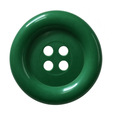

이전
다음

애착 물건 올리기
물건의 이야기
✕
물건 올리기
✕
물건 사진
물건 하나가 잘 보이는 사진을 올려주세요. 아이폰 HEIC 사진도 가능해요.
원본
배경 제거 후
배경 제거 다시 시도
물건의 이름
함께한 시간
물건의 이야기
한 질문에만 답해도 돼요.
1. 이 물건을 언제 가장 자주 쓰거나 곁에 두나요?
2. 이 물건 덕분에 그 시간이 어떻게 달라졌나요?
3. 이 물건은 어디서, 어떻게 구했나요?
4. 이 물건에서 가장 마음에 드는 점은 뭔가요?
등록하기
↗